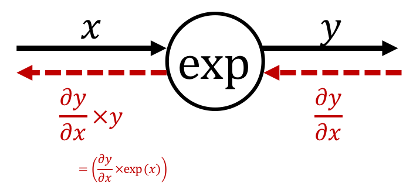
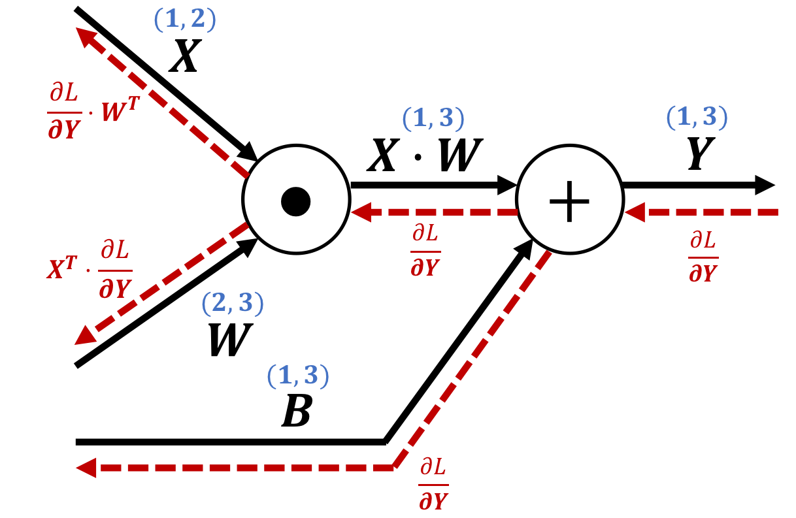
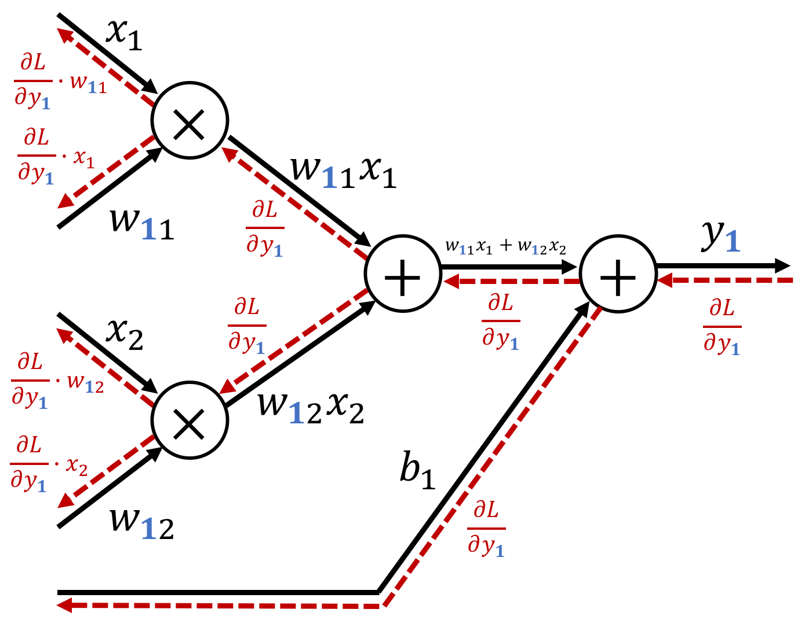

About

Bioinformatics/Deep learning/Augmented Human/The University of Tokyo

ここでは例として $z=(x+y)^2$ という式を扱う。この式は、次の $2$ 式から構成されていると考えることができる。
$$ \begin{cases} z = t^2\\ t = x+y \end{cases} $$この時、連鎖律から「$x$ に関する $z$ の微分 $\frac{\partial z}{\partial x}$」は「$t$ に関する $z$ の微分 $\frac{\partial z}{\partial t}$」と「$x$ に関する $t$ の微分 $\frac{\partial t}{\partial x}$」の積によって表すことができるので、以下のように書くことができる。
$$ \frac{\partial z}{\partial x} = \frac{\partial z}{\partial t} \times \frac{\partial t}{\partial x} $$$z=x+y$ という数式を考えと、この式の微分は次のように計算できる。
$$ \begin{cases} \begin{aligned} \frac{\partial z}{\partial x} = 1\\ \frac{\partial z}{\partial y} = 1\\ \end{aligned} \end{cases} $$したがって、加算ノードの逆伝播は以下のように表される。

つまり、加算ノードの逆伝播は「上流から伝わった微分の値をそのまま次のノードへと流すだけ」になる。
$z=xy$ という数式を考えと、この式の微分は次のように計算できる。
$$ \begin{cases} \begin{aligned} \frac{\partial z}{\partial x} = y\\ \frac{\partial z}{\partial y} = x\\ \end{aligned} \end{cases} $$したがって、乗算ノードの逆伝播は以下のように表される。

つまり、乗算ノードの逆伝播は「上流から伝わった微分の値に、順伝播の際の入力信号を『ひっくり返した値』を乗算して下流のノードへと流す」ことになる。
$y=\frac{1}{x}$ という数式を考えと、この式の微分は次のように計算できる。
$$ \frac{\partial y}{\partial x} = -\frac{1}{x^2} = -y^2 $$したがって、逆数ノードの逆伝播は以下のように表される。

つまり、逆数ノードの逆伝播は「上流から伝わった微分の値に『順伝播の出力の二乗にマイナスを付けた値』を乗算して下流のノードへと流す」ことになる。
$y=\exp(x)$ という数式を考えと、この式の微分は次のように計算できる。
$$ \frac{\partial y}{\partial x} = \exp\left(x\right) = y $$したがって、expノードの逆伝播は以下のように表される。

つまり、逆数ノードの逆伝播は「上流から伝わった微分の値に『順伝播の出力』を乗算して下流のノードへと流す」ことになる。

$\mathbf{Y} = \mathbf{X}\cdot\mathbf{W} + \mathbf{B}$ という数式を考えると、この式の微分は以下のようになる。
$$ \begin{cases} \begin{aligned} \frac{\partial L}{\partial \mathbf{X}} = \frac{\partial L}{\partial \mathbf{X}}\cdot \mathbf{W}^T\\ \frac{\partial L}{\partial \mathbf{W}} = \mathbf{X}^T\cdot\frac{\partial L}{\partial \mathbf{Y}}\\ \end{aligned} \end{cases} $$したがって、dotノードの逆伝播は以下のように表される。

天下り式にこの逆伝播を理解しても良いが、行列を対象とした逆伝播を求める場合は、行列の要素ごとに書き下すことで、これまでのスカラ値を対象とした計算グラフと同様に考えることができる。
実際に書き下すと、以下の計算グラフに分解できる。

class AddLayer:
def __init__(self):
pass
def forward(self, x, y):
out = x+y
return out
def backward(self, dout):
dx = dout * 1
dy = dout * 1
return dx, dy
class MulLayer:
def __init__(self):
self.x = None
self.y = None
def forward(self, x, y):
self.x = x
self.y = y
out = x * y
return out
def backward(self, dout):
dx = dout * self.y
dy = dout * self.x
return dx, dy
class InverseLayer:
def __init__(self):
self.out = None
def forward(self, x):
out = 1/x
self.out = out
return out
def backward(self, dout):
dx = dout * (-self.out**2)
return dx
class ExpLayer:
def __init__(self):
self.out = None
def forward(self, x):
out = np.exp(x)
self.out = out
return out
def backward(self, dout):
dx = dout * self.out
return dx
class DotLayer:
def __init__(self):
self.X = None
self.W = None
def forward(self, X, W):
"""
@param X : shape=(1,a)
@param W : shape=(a,b)
@return out: shape=(1,b)
"""
self.X = X
self.W = W
out = np.dot(X, W) # shape=(1,b)
return out
def backward(self, dout):
"""
@param dout: shape=(1,b)
@return dX : shape=(1,a)
@return dW : shape=(a,b)
"""
dX = np.dot(dout, self.W.T)
dW = np.dot(self.X.T, dout)
return dX,dW